Grupo de Trabalho
Planejamento e Prototipação
Gestão e Organização do Projeto
Definição do Tema e Cenário
O projeto foca na Rede Hospitalar Cuidar, uma instituição de saúde com matriz em Belo Horizonte e unidades remotas (Secretaria e três UPAs). O cenário exige alta disponibilidade e segmentação, dado o tráfego de dados sensíveis e a necessidade de comunicação ininterrupta para prontuários eletrônicos.
Responsabilidades e Colaboração
Para atender à gestão da comunicação e colaboração, o grupo utilizou ferramentas como Microsoft Teams e WhatsApp para alinhamento síncrono e assíncrono.
| Integrantes | Responsabilidade |
|---|---|
| Igor e Pedro | Planejamento de sub-redes (CIDR), NAT e lógica de serviços |
| Henrique | Implementação técnica e nomenclatura no Cisco Packet Tracer |
| Bernardo e Athos | Gestão de ativos, custos e planilhas de inventário |
| Fabrício | Redação técnica e revisão das normas de documentação |
Cronograma de Dedicação
| Data | Tarefa |
|---|---|
| 09/02 a 28/02 | Estudo dos microfundamentos e definição do cenário |
| 01/03 a 15/03 | Elaboração do inventário detalhado e cálculos de tráfego |
| 16/03 a 24/03 | Desenvolvimento do protótipo e testes de conectividade (Ping) |
| 25/03 a 28/03 | Ajustes de nomenclatura conforme feedback e entrega final |
Arquitetura Lógica e Endereçamento
Divisão por CIDR e NAT
A rede utiliza o bloco privado 10.0.0.0/8, segmentado para otimizar o domínio de broadcast e aumentar a segurança.
| Unidade | Faixa de Rede | Gateway | Servidor Principal |
|---|---|---|---|
| Matriz | 10.10.0.0/24 | 10.10.0.1 | SRV-BH-PRONTUARIO (10.10.0.10) |
| Secretaria | 10.20.0.0/24 | 10.20.0.1 | SRV-SEC-ADMIN (10.20.0.10) |
| UPA 1 | 10.30.0.0/24 | 10.30.0.1 | SRV-UPA1-LOCAL (10.30.0.10) |
| UPA 2 | 10.40.0.0/24 | 10.40.0.1 | SRV-UPA2-LOCAL (10.40.0.10) |
| UPA 3 | 10.50.0.0/24 | 10.50.0.1 | SRV-UPA3-LOCAL (10.50.0.10) |
Justificativa de Recursos
Inventário de Equipamentos
O inventário foi organizado para equilibrar custo-benefício e robustez. Na Matriz, optamos por Switches Cisco Catalyst 9200L pela capacidade de empilhamento e Firewalls FortiGate para segurança NGFW. O uso de nobreaks senoidais da APC garante que os sistemas de prontuário não sofram quedas por oscilações elétricas.
Cálculo de Links e Tráfego
Conforme a planilha de cálculos, a Matriz possui um link de 152 Mbps, dimensionado para suportar o tráfego de videoconsultas e sincronização de banco de dados das filiais, que operam com links de 42,4 Mbps cada.
Plano de Testes e Validação
Para validar o funcionamento, foram estabelecidos os seguintes testes no protótipo:
- Teste de Conectividade Interna: Pings entre PCs da mesma sub-rede.
- Teste de Conectividade WAN: Pings entre a UPA 3 e o SRV-BH-PRONTUARIO.
- Validação de Nomenclatura: Conferência de que todos os dispositivos seguem o padrão Unidade-Setor-ID.
Conclusão da Etapa 1
A Etapa 1 conclui-se com um protótipo funcional e uma documentação que justifica cada ativo escolhido. O projeto está pronto para a próxima fase, garantindo que a infraestrutura física e lógica atenda às demandas críticas da Rede Hospitalar Cuidar.
Preparação do Ambiente em Nuvem e Virtualização Local
Introdução
A Etapa 2 é marcada pelo mapeamento e implantação dos servidores em nuvem e on-premise para o devido atendimento do planejamento inicial. Nesta etapa, adaptações e definições de escopo foram realizadas para garantir a conformidade com o planejamento estabelecido na Etapa 1, bem como para atender às eventuais necessidades identificadas na fase anterior.
Gestão e Organização da Etapa
Responsabilidades e Colaboração
Para a execução da Etapa 2, as responsabilidades foram distribuídas entre os membros do grupo de forma a aproveitar as competências individuais e garantir a entrega dentro do prazo estabelecido.
| Integrantes | Responsabilidade |
|---|---|
| Igor e Pedro | Configuração das instâncias EC2 na AWS e definição da arquitetura da VPC rede-cuidar-vpc |
| Henrique | Configuração do servidor Ubuntu no Oracle VirtualBox, incluindo definição de IP estático via netplan e integração com a rede local |
| Bernardo e Athos | Instalação e validação dos serviços no servidor Ubuntu (Apache2, MySQL, BIND9, DHCP e VSFTPD), além do acompanhamento de custos da instância AWS |
| Fabrício | Configuração do Active Directory, criação das Unidades Organizacionais, vinculação de GPO e redação técnica do documento |
Ambiente em Nuvem — Amazon Web Services (AWS)
Escolha da Plataforma
O grupo optou pela utilização do Amazon EC2 (Elastic Compute Cloud) como plataforma de nuvem, por ser um dos principais players de mercado, oferecendo alta disponibilidade, escalabilidade e um vasto ecossistema de serviços gerenciados adequados à infraestrutura hospitalar da Rede Cuidar.
Instâncias Configuradas
As instâncias foram criadas conforme o mapeamento de servidores definido na Etapa 1. O Windows Server foi implantado via instância EC2 para atuar como servidor de aplicação para publicação do back-end hospitalar.
| Campo | Informação |
|---|---|
| Nome da Instância | Rede Cuidar |
| ID da Instância | i-03c0d9df7ad6e2f96 |
| Tipo de Instância | t2.large |
| Sistema Operacional | Windows Server 2016 Datacenter |
| IP Público | 54.80.166.57 |
| IP Privado | 10.0.1.84 |
| Usuário de Acesso | Administrator |
| Método de Acesso | RDP (Área de Trabalho Remota) |
| Região | us-east-1 (Norte da Virgínia) |
| VPC | rede-cuidar-vpc (10.0.0.0/16) |
| Status | Executando |
Configuração de Segurança — Acesso Criptografado
O acesso às instâncias é realizado por meio de SSH com autenticação por par de chaves pública/privada, garantindo comunicação totalmente criptografada entre os administradores e os servidores em nuvem. Essa abordagem assegura que nenhum acesso não autorizado seja possível sem a chave privada correspondente.
Virtualização Local — Oracle VirtualBox
Configuração do Servidor On-Premise
Para o mapeamento dos serviços on-premise, foi utilizado o Oracle VirtualBox como plataforma de virtualização. O servidor local foi configurado com o sistema operacional Ubuntu Server, representando o servidor SRV-BH-PRONTUARIO da Matriz.
Configuração de Rede — IP Estático
O servidor virtual foi configurado com endereço IP estático via netplan, aplicado no arquivo /etc/netplan/50-cloud-init.yaml:
- Interface:
enp0s3 - Endereço IP:
192.168.18.75/24 - Gateway:
192.168.18.1 - DNS primário:
8.8.8.8(Google DNS) - DNS secundário:
8.8.4.4(Google DNS) - DHCP4: Desabilitado
network:
version: 2
ethernets:
enp0s3:
dhcp4: false
addresses:
- 192.168.18.75/24
routes:
- to: default
via: 192.168.18.1
nameservers:
addresses:
- 8.8.8.8
- 8.8.4.4Serviços Instalados
| Serviço | Função | Porta |
|---|---|---|
| SSH | Acesso remoto seguro e criptografado ao servidor | 22 |
| Apache2 | Servidor Web para publicação de aplicações | 80/443 |
| MySQL | Banco de dados relacional para prontuários eletrônicos | 3306 |
| BIND9/named | Servidor DNS para resolução de nomes da rede interna | 53 |
| DHCP | Distribuição automática de endereços IP na rede local | 67 |
| VSFTPD | Servidor FTP para transferência segura de arquivos | 21 |
Evidências de Funcionamento
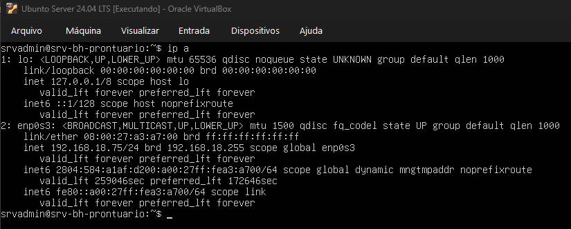
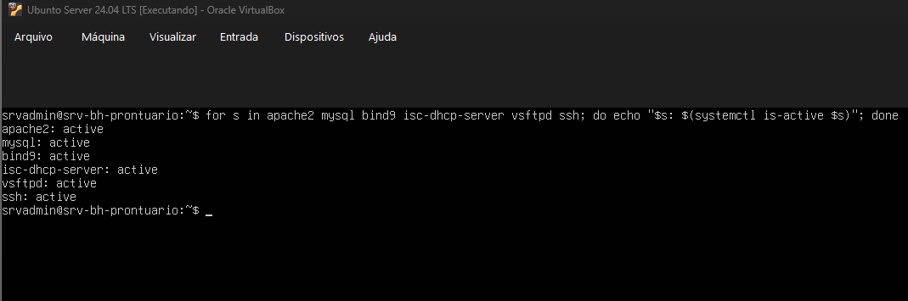
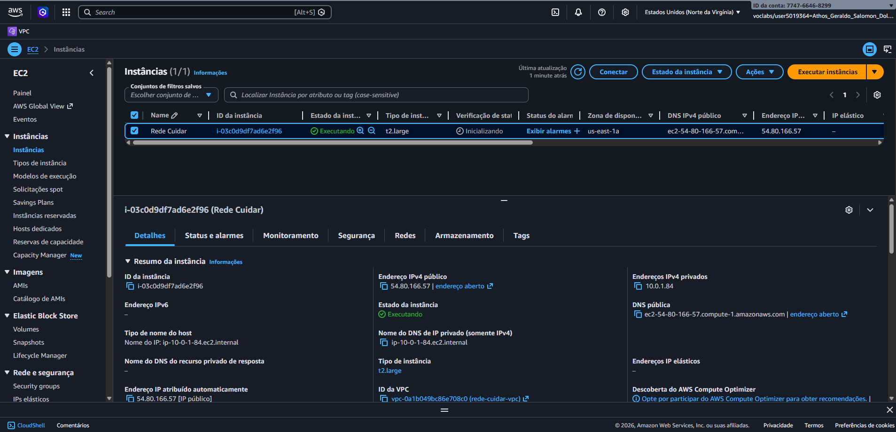
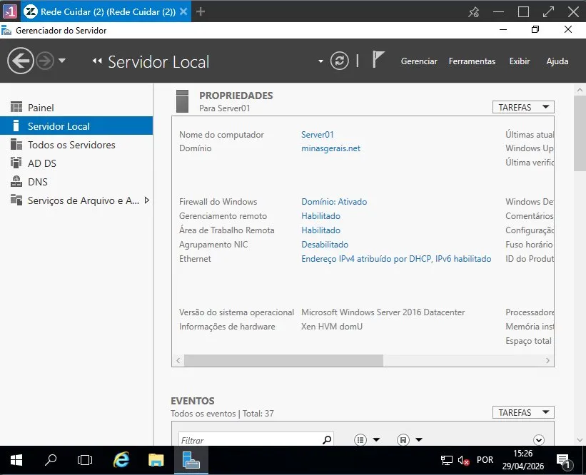
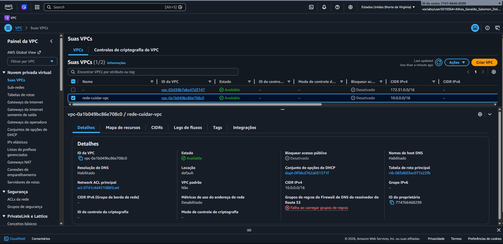
rede-cuidar-vpc configurada na AWS com CIDR 10.0.0.0/16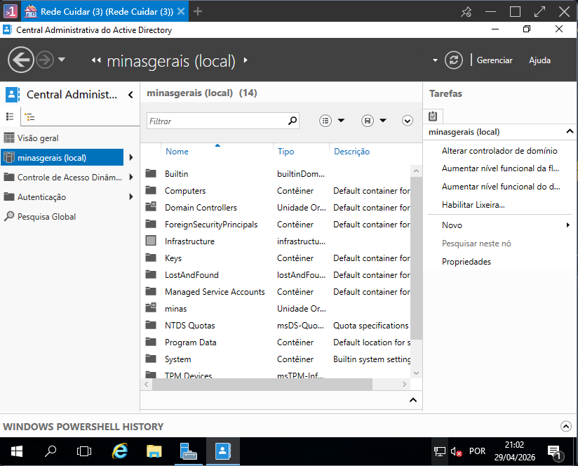
minasgerais.net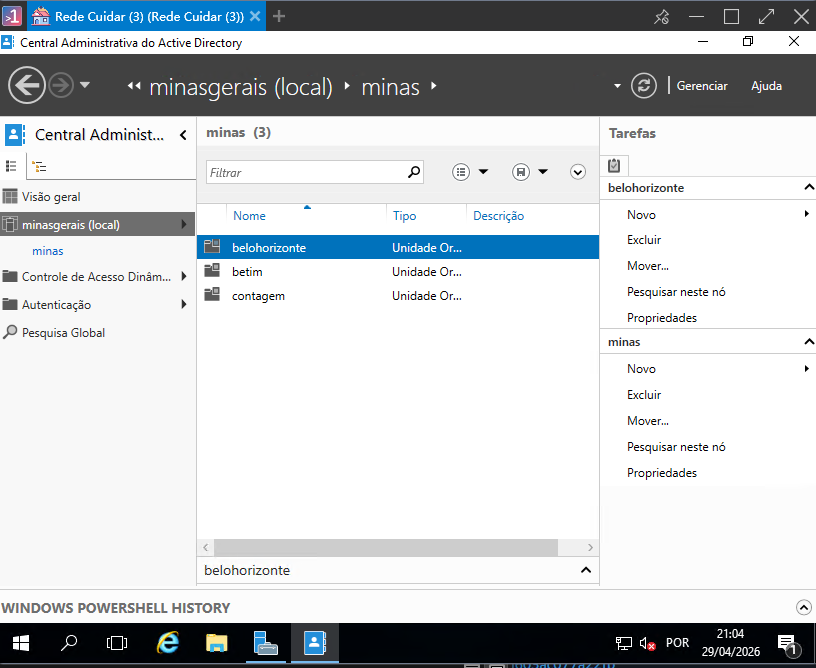
minas com sub-OUs belohorizonte, betim e contagem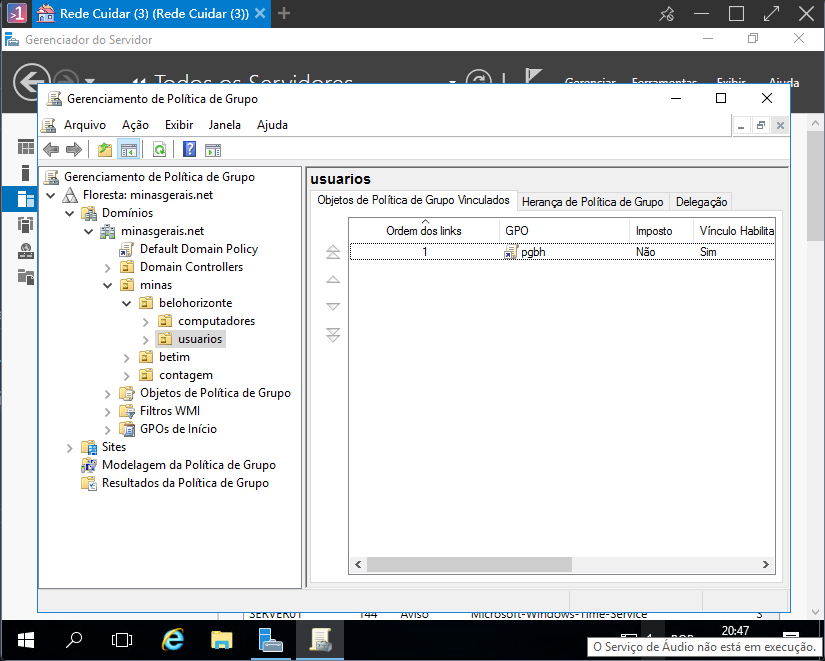
pgbh vinculada à OU usuarios em belohorizonteVídeo Demonstrativo
O vídeo demonstrativo da Etapa 2, exibindo o funcionamento dos ambientes configurados, está disponível no Microsoft Teams:
▶ Assistir vídeo demonstrativoMonitoramento Ativo da Infraestrutura de Servidores
Introdução ao Monitoramento Centralizado
Para garantir os critérios de alta disponibilidade, integridade, identificação proativa de gargalos e comunicação ininterrupta exigidos pela Rede Hospitalar Cuidar, foi consolidada uma solução de monitoramento de ativos utilizando a ferramenta corporativa Zabbix.
Nesta etapa, a infraestrutura foi integrada de ponta a ponta, permitindo a coleta de dados de desempenho em tempo real por meio de agentes dedicados e protocolos de rede. A telemetria abrange o consumo de hardware (processamento, memória, E/S de disco) e volumetria de tráfego de dados, fornecendo visibilidade total sobre o ecossistema local e em nuvem.
Gestão e Organização da Etapa
Responsabilidades e Colaboração
As atividades da Etapa 3 foram distribuídas entre os membros do grupo conforme as competências demonstradas nas etapas anteriores, garantindo continuidade e coesão na execução do projeto.
| Integrantes | Responsabilidade |
|---|---|
| Igor e Pedro | Instalação e configuração do Zabbix Appliance como plataforma central de monitoramento, incluindo definição de IP estático e acesso à interface web |
| Henrique | Configuração do protocolo SNMP nos servidores Ubuntu e Windows, correção das permissões de acesso no snmpd.conf e cadastro dos hosts no Zabbix |
| Bernardo e Athos | Criação do mapa de rede Rede Hospitalar Cuidar e configuração do dashboard personalizado com widgets de métricas e alertas |
| Fabrício | Análise e interpretação dos dados coletados pelo Zabbix, documentação dos resultados e redação técnica do capítulo |
Topologia Lógica e Visões de Gerência
Mapa de Conectividade da Infraestrutura
O mapa de topologia estruturado no painel nativo do Zabbix (All maps / Rede Hospitalar Cuidar) ilustra as relações de conectividade e o fluxo saudável de comunicação entre os nós de gerência.
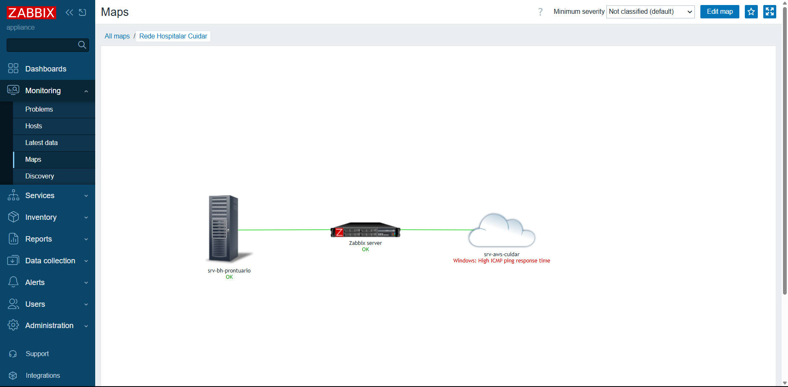
Painel Global de Operações (Dashboard)
O monitoramento centralizado conta com um painel de controle principal (Dashboard), que agrega os principais indicadores de desempenho do ecossistema hospitalar, facilitando a tomada de decisão em nível de suporte de infraestrutura.
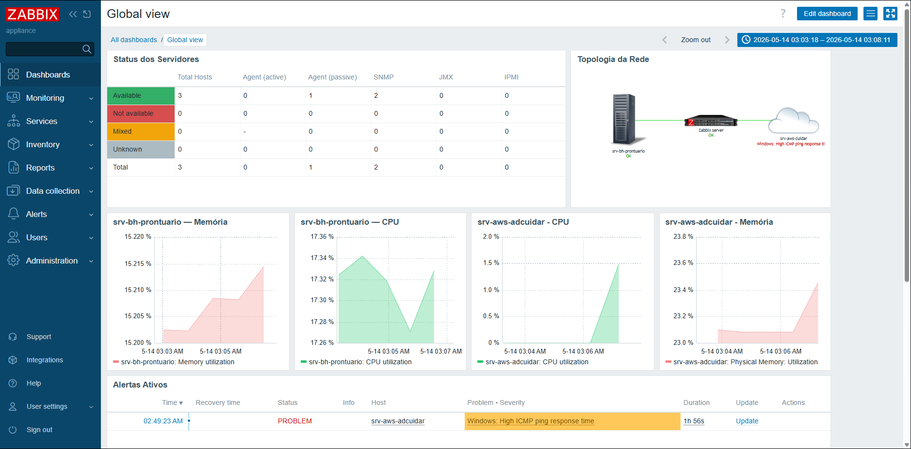
Inventário de Hosts e Status de Disponibilidade
Todos os hosts monitorados foram devidamente parametrizados e encontram-se operando sem a presença de problemas ou alertas ativos. A integração com o agente Zabbix garante a confiabilidade dos status apresentados.
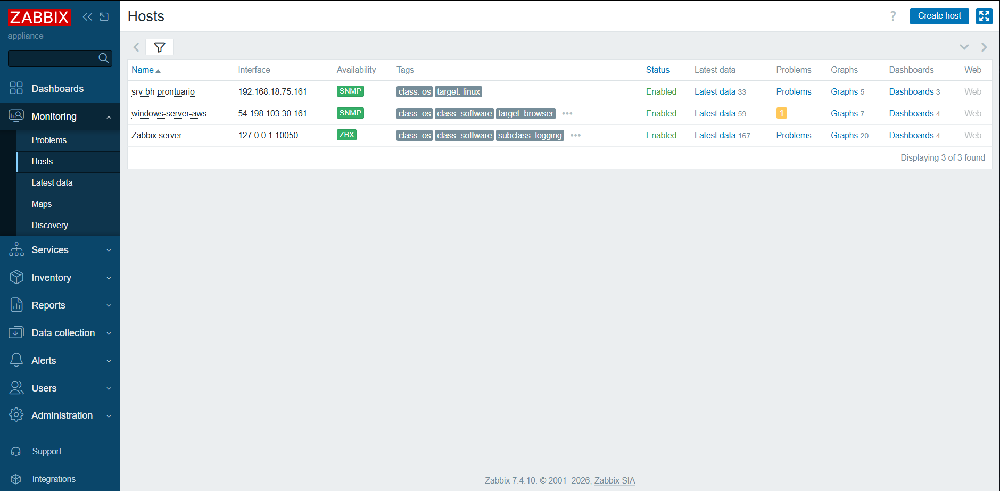
Métricas de Performance — Servidor Local (srv-bh-prontuario)
O servidor local virtualizado, responsável pelo banco de dados de prontuários eletrônicos e serviços internos da Matriz em Belo Horizonte, teve seu comportamento monitorado pelos gráficos abaixo.
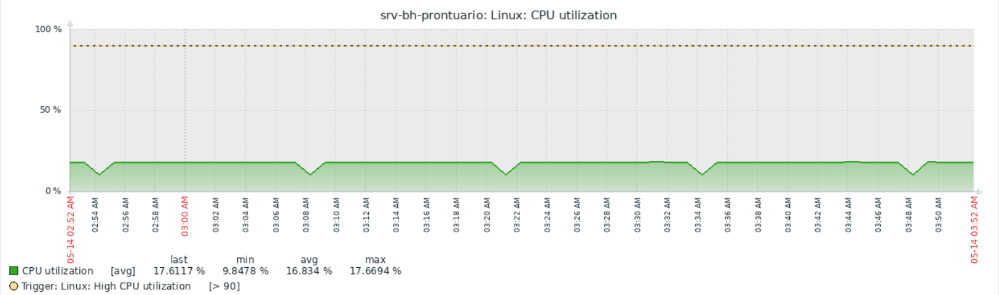
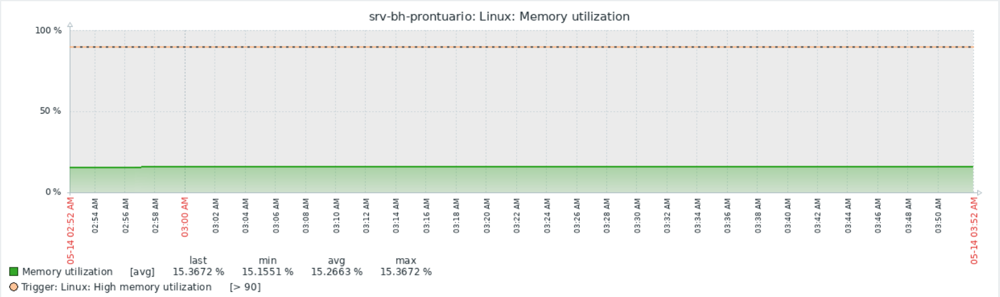
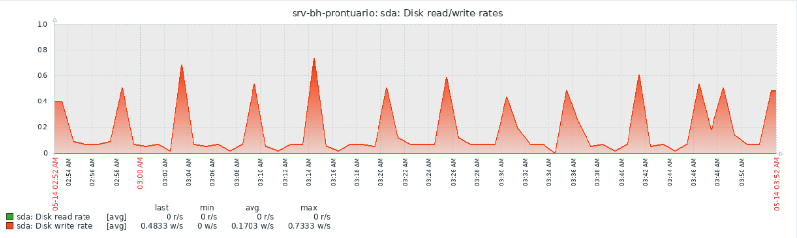
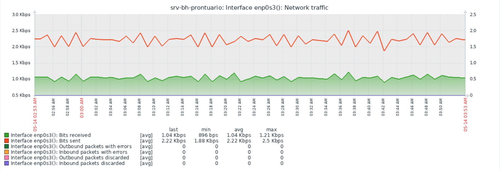
enp0s3)Métricas de Performance — Servidor em Nuvem (srv-aws-cuidar)
A instância EC2 alocada na região Norte da Virgínia (us-east-1), que atua como controlador de domínio Active Directory e hospedagem do back-end hospitalar, teve suas métricas consolidadas abaixo.
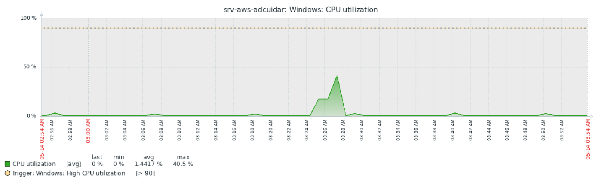
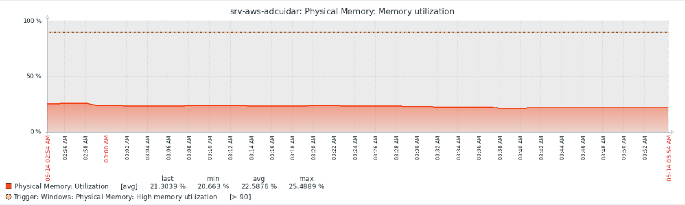
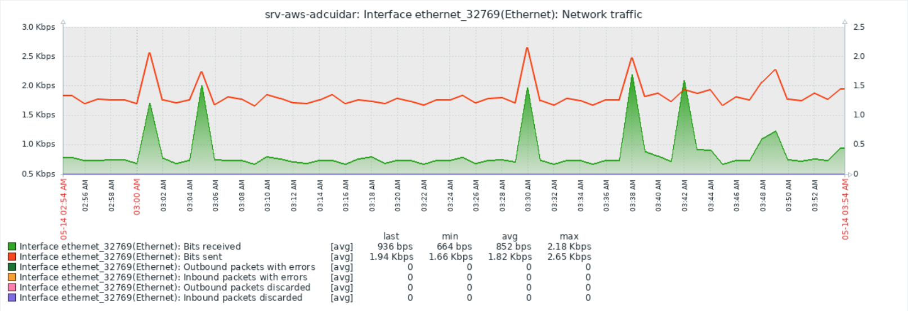
CRUD — Cadastro de Pacientes
Introdução
A Etapa 4 consiste no desenvolvimento de um sistema CRUD (Create, Read, Update, Delete) para cadastro de pacientes da Rede Hospitalar Cuidar. A aplicação foi construída em Python com Flask e banco de dados MySQL, permitindo o gerenciamento completo dos registros de pacientes.
Funcionalidades Implementadas
- Listar todos os pacientes cadastrados
- Cadastrar novo paciente (nome, CPF, nascimento, unidade)
- Editar registro existente
- Remover paciente com confirmação
Unidades de Atendimento
O sistema contempla as cinco unidades da rede:
- Matriz — BH
- Secretaria
- UPA 1, UPA 2 e UPA 3
Tecnologias Utilizadas
| Componente | Tecnologia |
|---|---|
| Back-end | Flask 3.0 (Python) |
| Banco de Dados | MySQL 8.0 |
| Conector | mysql-connector-python |
| Front-end | HTML5 + CSS3 (Jinja2) |
| Servidor | Ubuntu Server (192.168.18.75) |
Estrutura do Projeto
crud-cuidar/
├── app.py # Rotas CRUD (Flask)
├── setup_db.sql # Script de criação do banco
├── requirements.txt # Dependências Python
└── templates/
├── base.html # Layout base
├── index.html # Listagem de pacientes
├── cadastrar.html # Formulário de cadastro
└── editar.html # Formulário de ediçãoImplantação
A aplicação foi implantada no servidor Ubuntu local da Matriz (192.168.18.75), acessível via navegador na porta 5000. O banco de dados hospital_cuidar roda no mesmo servidor, garantindo baixa latência nas operações.